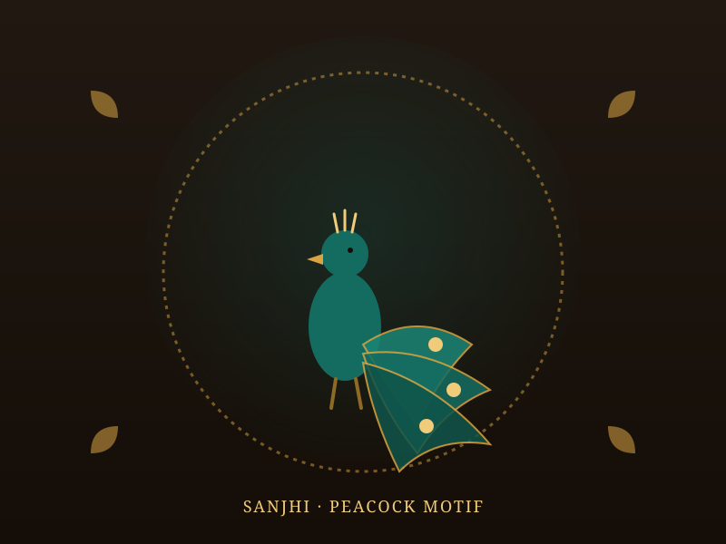
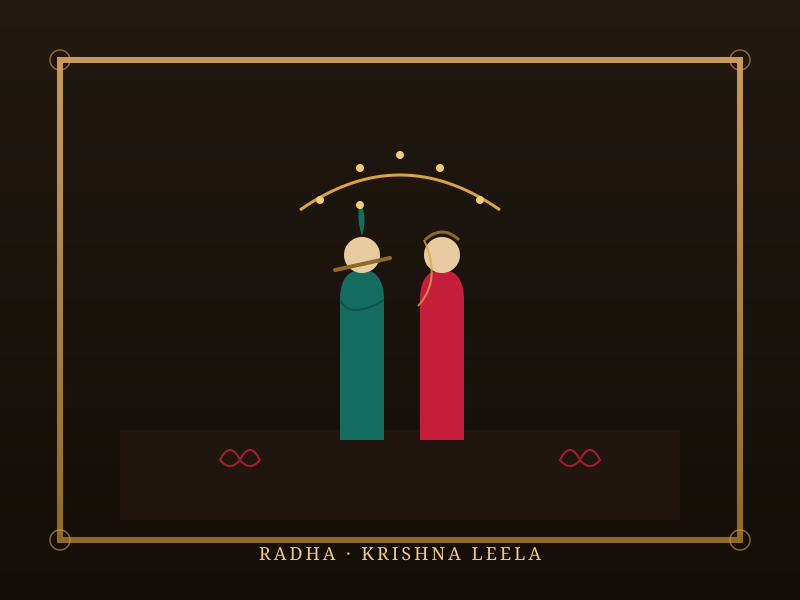
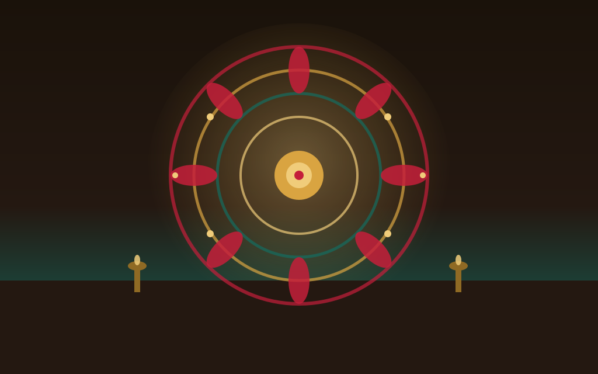
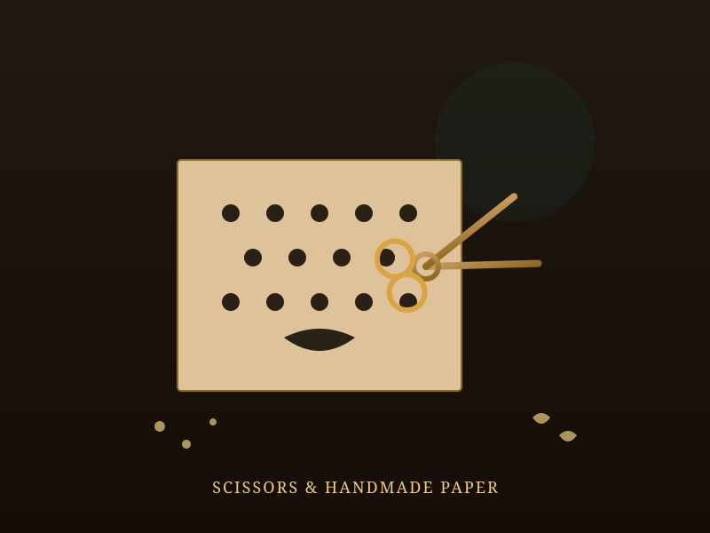

Sanjhi Art Explorer
Step into Sanjhi, the centuries-old art of paper-cut stencilling from the Braj region. Born of devotion to Radha and Krishna, intricate hand-cut designs once transformed temple floors into fleeting rangolis of colour, and today live on as framed art, lampshades and textiles across India.
From Temple Ritual to Framed Art
Sanjhi is a traditional paper-cutting and stencil-based art rooted in the spiritual heritage of Mathura and Vrindavan, Lord Krishna's birthplace and childhood home. Folklore traces its origins to Radha, who is said to have created the first Sanjhi rangolis using natural colours, flowers, leaves and coloured stones to express her devotion to Krishna — a tradition the other gopis soon embraced as well.
The art form gained real prominence during the Bhakti movement of the 15th and 16th centuries, when it was absorbed into the ritual life of Vaishnava temples. Brahmin priests used finely cut paper stencils, known as khakha, to create intricate rangoli patterns on temple floors, walls and even on water, which were then filled with dry coloured powders, flowers, mirror pieces or metal foil for festivals like Holi and Janmashtami.
✂️ At a Glance
- Origin: Braj region — Mathura and Vrindavan, Uttar Pradesh.
- Name meaning: From "sajja" (decoration) or "sanjh" (dusk), the hour these rangolis were traditionally revealed.
- Historical rise: Gained prominence during the Bhakti movement of the 15th–16th centuries.
- Core theme: Radha-Krishna's leelas, peacocks, cows and the Yamuna river.
How a Sanjhi Stencil Is Made
The delicate process behind every khakha, from blank paper to a finished ritual design.
Handmade Paper
Artisans begin with handmade paper, chosen for its texture and ability to hold fine, delicate cuts without tearing.
Freehand Cutting
Using specially designed small scissors or blades, intricate lace-like motifs are cut directly into the paper, often without a prior sketch.
Colour Sifting
The finished stencil is laid on a flat surface or water, and dry coloured powder is sifted through the cutwork to reveal the design.
Embellishment
Flowers, coloured stones, mirror pieces and metal foil are added for texture, catching light across the finished rangoli.
The Reveal
Once complete, the stencil is carefully lifted, unveiling the design at dusk — the very hour that gives Sanjhi its name.
Modern Framing
Today, many stencils are preserved as artworks themselves, mounted and framed rather than dissolved back into dust or water.
🦚 Recurring Themes
- Radha-Krishna Leelas: Scenes of divine love and play form the heart of most Sanjhi designs.
- Peacocks & Cows: Recurring motifs tied to Krishna's pastoral life in Vrindavan.
- The Yamuna River: Flowing water patterns echo the river central to Krishna's legends.
- Kadamba Trees & Creepers: Ornamental borders inspired by Vrindavan's sacred groves.
Themes and Materials of Sanjhi Art
Traditional Sanjhi designs draw on the great Hindu epics, though the artform is centred overwhelmingly on stories of Radha and Krishna. Motifs of peacocks, cows, the meandering Yamuna, and the kadamba tree recur constantly, reflecting the pastoral world of Vrindavan where Krishna is said to have spent his youth. Even today, walking the streets of Mathura and Vrindavan, these same motifs remain instantly recognisable.
Materials used to fill the stencils have always gone beyond simple coloured powder — flowers, coloured stones, mirror fragments and metal foil are layered in to catch the light and add texture. This blend of humble, natural materials with painstaking craftsmanship is part of what makes Sanjhi, even in its ritual form, feel closer to a meditative practice than a decorative one.
Motifs, Rituals & the Craft of Sanjhi
Illustrated impressions of the stencils, rituals and tools behind centuries of this paper-cut tradition.




📚 References & Further Reading
- National Portal for Handicrafts. Sanjhi Art — Craft Documentation, Mathura, Uttar Pradesh.
- Isha Sadhguru — Hands of Grace. Sanjhi Art: The Miracles of Paper and Scissors.
- MAGIK INDIA. Sanjhi, the Art of Stencil in India.
- DirectCreate. Sanjhi Craft — Mathura, Uttar Pradesh.
- Journal of Population Therapeutics and Clinical Pharmacology. An Analysis on Sanjhi Art: An Epitome of Indian Folk Art in Mathura.